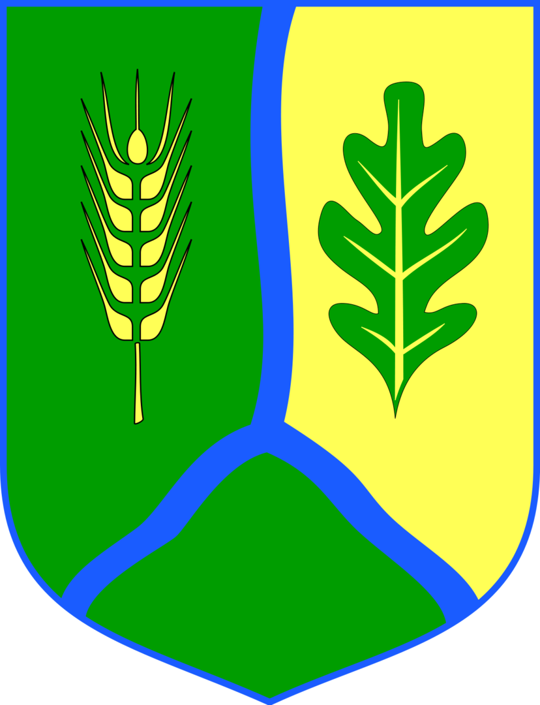

Strona Gostycyna
Moja wieść jest położona w województwie kujawsko-pomorskim, w powiecie tucholskim, w gminie Gostycyn na zachodnim obrzeżu Borów Tucholskich, na trasie linii kolejowej Tuchola-Pruszcz-Koronowo (z zawieszonym ruchem: pasażerskim od roku 1993 i towarowym od roku 2011) i przy drodze wojewódzkiej.
W latach 1954–1972 wieś należała i była siedzibą władz gromady Gostycyn. W latach 1975–1998 miejscowość administracyjnie należała do województwa bydgoskiego. Według Narodowego Spisu Powszechnego (III 2011 r.) liczyła 2441 mieszkańców[1] i jest największą miejscowością gminy. Miejscowość jest siedzibą władz gminy Gostycyn oraz klubu sportowego Myśliwiec Gostycyn (od sezonu 2016/2017 w A klasie, grupa: Bydgoszcz I)

W pierwszej połowie listopada 1906 r. w miejscowej szkole elementarnej rozpoczął się strajk dzieci przeciwko nauczaniu religii w języku niemieckim (jego dalszy przebieg nie jest znany). Z uczestników strajku znane są nazwiska następujących dzieci: Cismowscy, Niemczykowie, A. Gómińska. Strajk był elementem znacznie większej akcji biernego oporu wobec pruskich władz szkolnych, która na przełomie 1906 i 1907 r. objęła ponad 460 (!) szkół w prowincji Prusy Zachodnie, czyli przedrozbiorowe Pomorze Gdańskie, Powiśle, ziemię chełmińską i ziemię lubawską oraz część Krajny. Inspiracją dla strajków pomorskich były wcześniejsze działania dzieci w prowincji wielkopolskiej, ze słynnym strajkiem we Wrześni (1901) na czele.